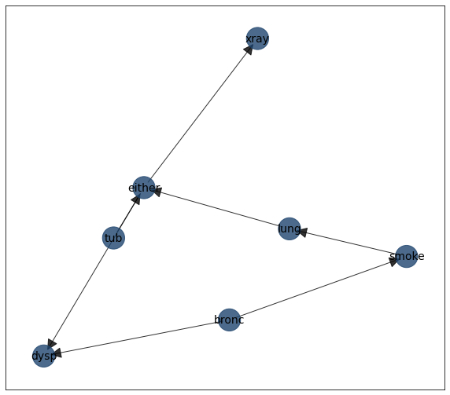
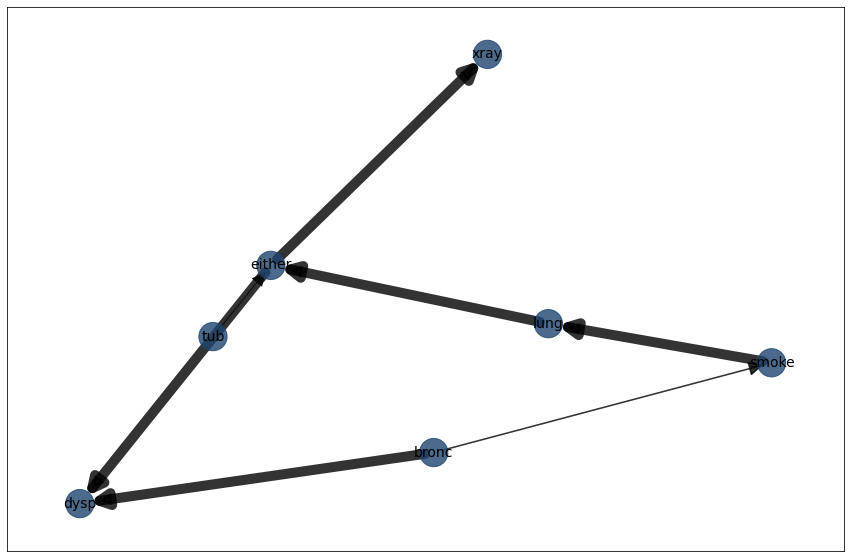

Independence test
The goal of the independence test is to compute the edge strength using a statistical test of independence based using the model structure (DAG) and the data. For the pairs in the DAG (either by structure learning or user-defined), an statistical test is performed. Any two variables are associated if the test’s p-value < significance_level.
Lets compute the DAG for asia data set and examine the edge strength.
# Import library
import bnlearn as bn
# Load example data set
df = bn.import_example(data='asia')
# Structure learning of sampled dataset
model = bn.structure_learning.fit(df)
# Plot without independence test
G = bn.plot(model)
# Compute edge strength with chi square test
model = bn.independence_test(model, df, test='chi_square')
# Show the results of the independence test
print(model['independence_test'])
# source target stat_test p_value chi_square dof
# 0 tub either True 0.000000e+00 1509.729663 1
# 1 smoke lung True 8.542258e-81 362.378980 1
# 2 lung either True 0.000000e+00 8340.061758 1
# 3 bronc dysp True 0.000000e+00 4619.926593 1
# 4 bronc smoke True 1.075377e-197 899.817192 1
# 5 either xray True 0.000000e+00 5455.522990 1
# 6 either dysp True 8.726744e-73 325.601286 1
# The results from the independence test are automatically used in the plot.
# We will use the same layout as in the previous plot to make the comparison easier.
bn.plot(model, pos=G['pos'])
 |
 |